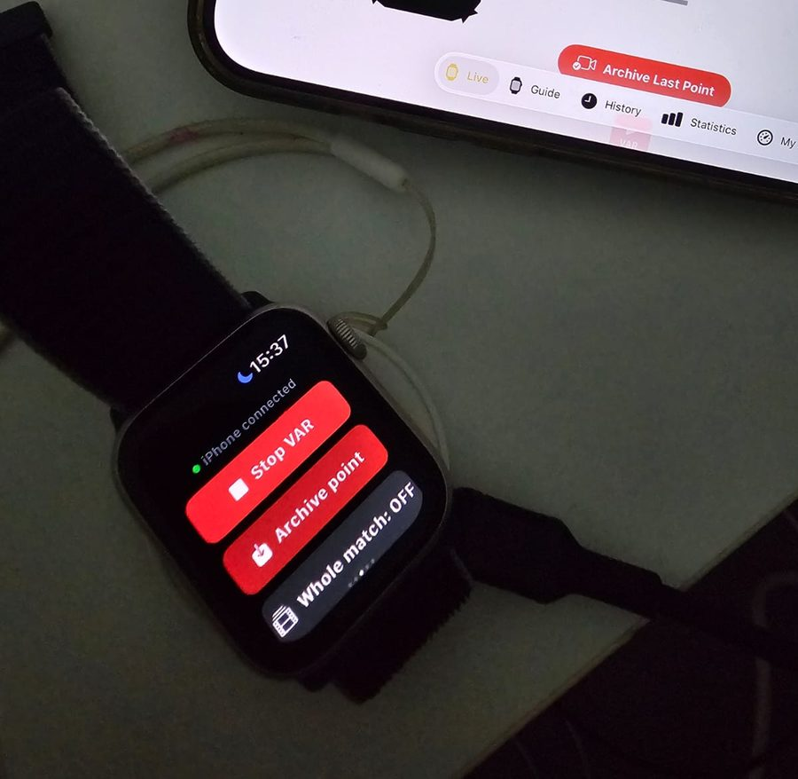
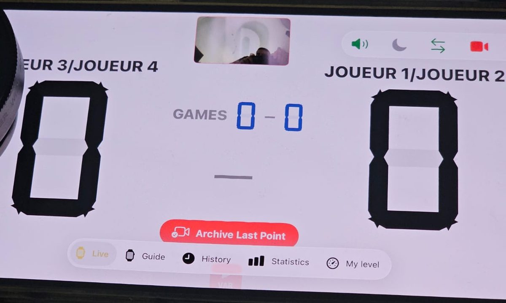
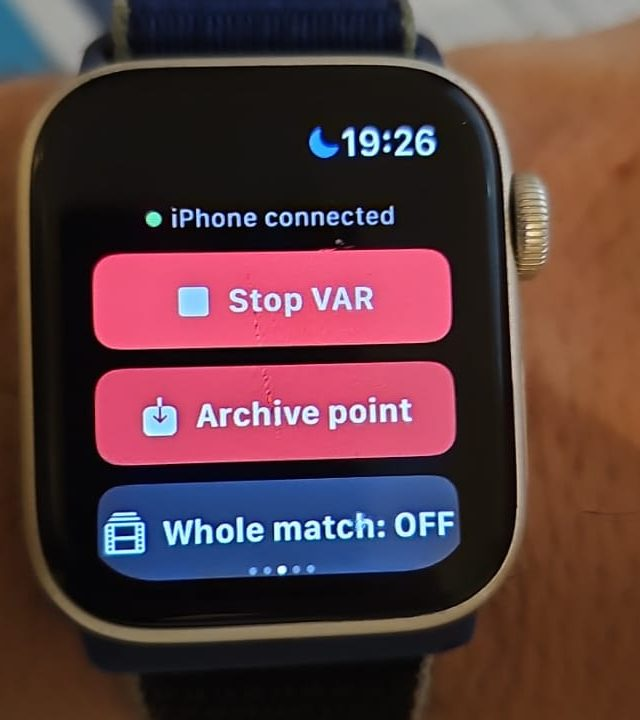

Setup in 2 minutes
- Install both apps. PadelTap Audio Pro on the Apple Watch, and PadelTap Audio on the iPhone. The iPhone app is free.
- Allow Bluetooth. Tap Allow when each app asks. The score travels from the Watch to the iPhone by Bluetooth, which is instant. iCloud is only the backup and can take a few seconds.
- Open the iPhone app first, then the Watch app. Wait about 10 seconds before the first point so they find each other.
- Keep the iPhone app on screen during the match. If the iPhone locks or you switch apps, the live score and the VAR stop.

Scoring on the Watch
Tap a team to give it the point. The Watch announces the score out loud, like a tournament umpire, and handles deuce, golden point, tie-breaks and sets for you.
The Watch pages
Swipe left and right to move between the 5 pages:
- Score: the match.
- Settings: format (best of 3 or 5, golden point), voice, and where announcements play: the Watch or the iPhone.
- VAR: remote control for the iPhone camera (see below).
- Americano: rotating partners mode.
- History: past matches and stats.
Who serves
The server's name is shown in red at the top. At the start of each set, the serving team can choose which partner serves: tap the red name to switch. A wrong point? Use undo.
Live score on the iPhone
Put the iPhone where players can see it. The score updates by itself after every point. LIVE at the top left means it's receiving the match.
- Between games, the big digits show the games score in color until the next point is played.
- The server's name is highlighted in red.
- Turn the phone sideways for a bigger scoreboard.
The buttons at the top right
- 🔊Announcements on the iPhone on or off.
- ☾Light or dark scoreboard. Light reads better in the sun.
- ⇄Swaps left and right so the screen matches where each team stands.
- 📹The VAR camera. Tap to turn it on, long-press for its settings.
The tabs at the bottom: Live, Guide, History, Statistics and My level.
Keep your best points, settle the disputed ones
The VAR films the court without stopping, but keeps only the last 30 seconds to 5 minutes in memory. After a great rally or a disputed ball, archive it: those last seconds are saved to Photos, with a TV-style score banner on the video. Ready to replay on the court, or to share on Instagram.
1. Place the phone
- Use a tripod or a clip on the fence, behind one team and as high as you can.
- Turn the phone sideways to film the whole court.
- Use the back camera: it films wider than the front camera and catches the service boxes.
2. Turn the VAR on
- Tap the camera icon at the top right. It turns red and a small preview appears in the top bar.
- Long-press the camera icon to open VAR Camera settings:
- Back Camera / Front Camera
- 180° Rotation if the image is upside down
- VAR length: how much is kept, from 30 s to 5 min
- Record the whole match
- Score shown in the video: the score banner
- Record sound

3. Archive a point
Right after a great or disputed point, tap Archive Last Point. The last seconds are saved to your Photos app. No need to stop the VAR: it keeps recording.
4. Replay it
Tap the small red ▶ VAR button just under the archive button, next to Saved to Photos. The replay opens right away. Use the speed buttons on the side (0.25×, ½, 1×, 2×) and pinch to zoom on the line.
Whole match
Turn on Record the whole match before you start the VAR. The full match is saved to Photos when you stop the VAR. Keep the app open while it saves.
Storage
Videos need space. Before a long match, check that the iPhone has a few GB free. When storage runs low, the app saves what it has and keeps only the last seconds.
Control the VAR from your wrist
No need to walk to the phone. Swipe to the VAR page on the Watch:

- Start VARStarts or stops the iPhone camera.
- Archive pointSaves the last seconds to Photos.
- Whole matchTurns full-match recording on or off.
- ▶︎ ⏯ ✕Opens the last clip on the iPhone, plays or pauses it, closes it.
- 🐢 ½ 1× ⏩Replay speed: 0.25×, half, normal, 2×.
Americano
On the Watch, swipe to the Americano page, enter the players and play. The team that serves is highlighted in green, so you always give the point to the right team.
The iPhone switches to Americano by itself: current score, live standings with 3-letter player codes, and the podium at the end.
Quick fixes
The iPhone score updates slowly
The apps are using iCloud instead of Bluetooth.
- Turn Bluetooth on, on the iPhone and the Watch.
- Allow Bluetooth for both apps. iPhone: Settings › Privacy & Security › Bluetooth › PadelTap Audio. Watch: Settings › Privacy & Security › Bluetooth › PadelTap Audio Pro.
- Close both apps, open the iPhone app first, then the Watch app.
- Check that the Watch VAR page says iPhone connected. If it says Other iPhone refused, make sure both devices use the same Apple ID with iCloud on, then restart them.
"Nothing recorded" when I archive
Usually the iPhone storage is full. Free up a few GB in Settings › General › iPhone Storage. Also make sure the camera icon is red and the app stays on screen.
The video is upside down
Long-press the camera icon and choose 180° Rotation.
The VAR stopped by itself
The camera stops when the iPhone locks, when you open another app, or during a call. Keep PadelTap Audio on screen and plug in the phone for long matches.
I can't hear the announcements
Check the audio source in the Watch Settings page. With iPhone selected, sound plays on the phone or on the Bluetooth speaker connected to it.
Get the apps
On a computer or a club screen? Scan with your iPhone camera. On your phone, tap the button.